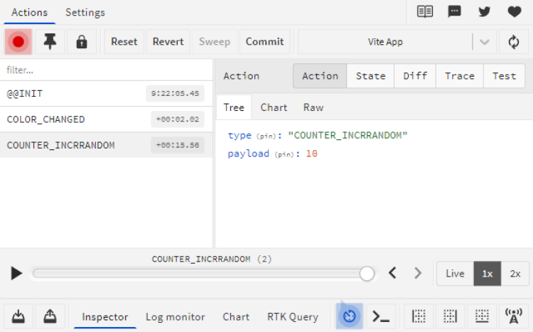

En se basant sur notre application actuelle, imaginons avoir besoin d’une nouvelle fonctionnalité qui permette d’incrémenter notre compteur d’un nombre entier aléatoire entre 0 et 10.
Créer un nouveau bouton qui génère une nouvelle action au clic qui envoie un nombre entier aléatoire entre 0 et 10 à notre reducer, le reducer doit interpréter l’action et mettre à jour notre compteur.
Nous pouvons d’abord créer le nouveau bouton dans le fichier “index.html” :
See the Pen Untitled by OpenSpirit (@OpenSpirit) on CodePen.
Créer un nouvel événement qui va générer le nombre aléatoire et envoyer une nouvelle action à notre reducer :
See the Pen Untitled by OpenSpirit (@OpenSpirit) on CodePen.
Nous pouvons désormais réceptionner l’action dans le reducer, afin de la traiter et modifier la valeur de l’état :
See the Pen Untitled by OpenSpirit (@OpenSpirit) on CodePen.
Utilisez l’outil Redux DevTools afin de s’informer sur la valeur du nombre aléatoire reçue par la charge utile de notre action et rétablir l’état de notre store à l'état précédent l’action.
Après avoir incrémenter le compteur avec notre nouveau bouton, nous pouvons accéder à l’outil Redux DevTools afin d’inspecter l’action qui vient d’être transmise à notre reducer :
Ici, nous pouvons observer que la charge utile de notre action a transmis un nombre qui a une valeur de 10.
Nous pouvons retourner à l'état initial de notre application en appuyant sur le bouton reset, nous pouvons également nous déplacer à un moment précis de l’application en sélectionnant une action spécifique puis sur le bouton “Jump” pour nous transporter au moment où cette action vient de s'exécuter.